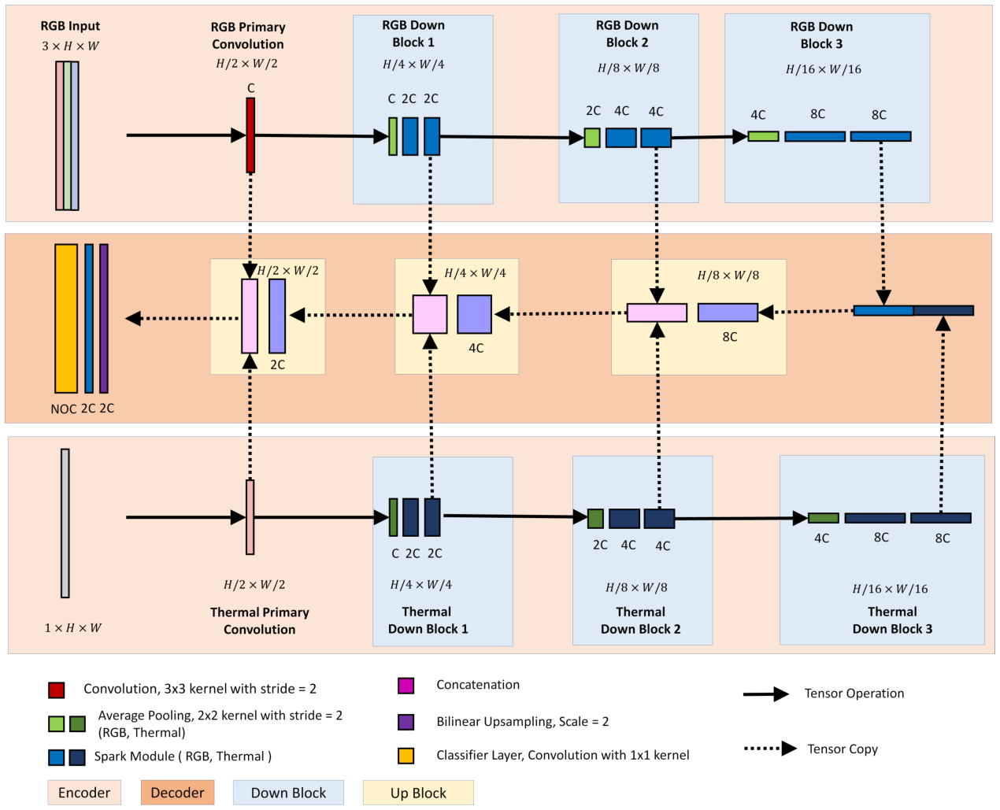
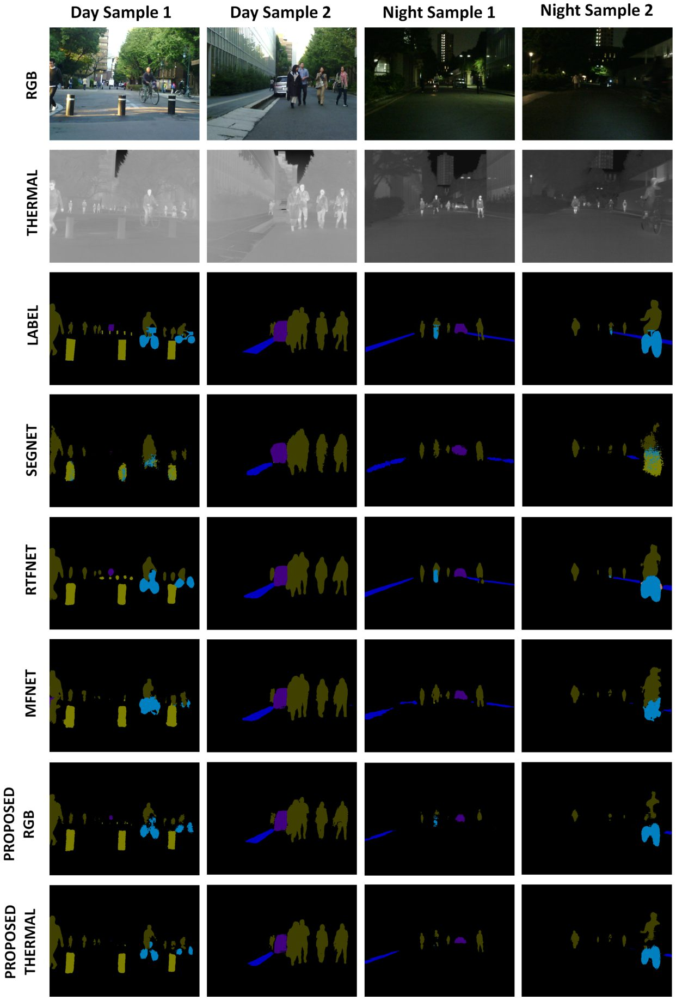
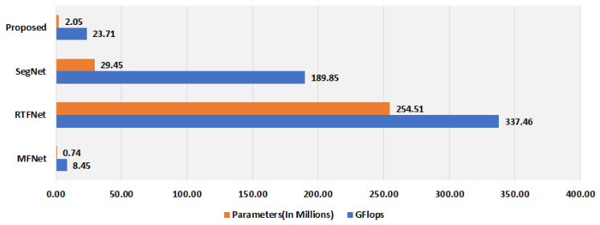

Using heat images to sharpen street-scene segmentation at night
After dark, a normal camera sees very little, but a thermal camera still picks out warm things such as people. We built a small network that reads both a colour image and a thermal image of a street and labels every pixel with an object type. We then cleaned up the result using the thermal image to decide where object edges lie. On the night images, this gave higher scores than the competing models we compared (Tables I and II).
The problem
Night surveillance is a major use of thermal imaging, because ordinary cameras perform poorly in the dark. Our task was semantic segmentation, which means giving each pixel of a street scene a label such as person, car or bike. The simplest way to use two kinds of image is to stack them into one four-channel input. But the three colour channels depend on each other, while a thermal channel records properties such as surface quality and temperature, and may not correspond to the colour image pixel by pixel. So we gave each its own encoder.
How it works
The network has two encoders, one for the colour image and one for the thermal image. Both are based on the compact SegFast design, which uses cheap depth-wise separable convolutions inside Spark modules. A single decoder then enlarges the features, and at each size it joins the features from both encoders. The last layer gives a label for each pixel.

The outlines from a network like this can still be ragged. A conditional random field, or CRF, is a post-processing step that tidies them. It links neighbouring pixels: nearby pixels with similar intensity are encouraged to share a label. Normally the intensity is taken from the input picture, here the colour image. Our change was to compute that similarity from the thermal image instead, because the thermal spectrum depends on the heat properties of an object rather than on colour and lighting. The network's own pixel predictions stay as they are and serve as the starting guess.
What we found
We used a street-scene data set of 1,563 images, 820 taken by day and 743 at night, split roughly 2:1:1 into training, validation and test sets. We compared against SegNet, MFNet and RTFNet, applying both kinds of CRF to all four networks. We report average pixel-level accuracy and mean intersection over union (IoU), which scores how well each predicted region overlaps the true one.
On the night images our network with the thermal CRF reached an average accuracy of 0.8185 and a mean IoU of 0.6438. With the colour CRF it got 0.7340 and 0.5784, and with no CRF 0.6119 and 0.5681. RTFNet with the thermal CRF scored 0.7687 and 0.6293. On the full day-and-night set, our network scored 0.7398 and 0.6333 with the thermal CRF (Tables I and II).

The network is also small. It has 2.05 million parameters and 23.71 GFlops, against 29.45 million and 189.85 for SegNet, and 254.51 million and 337.46 for RTFNet. MFNet is smaller still, at 0.74 million parameters and 8.45 GFlops.

What it does not do
The benefit of thermal information depends on the time of day. In the daytime, sunlight and shadows make thermal images very noisy compared with the information in the visible spectrum, and the colour CRF has the edge. Averaged over the four networks, the day-time accuracy was 0.5642 with the colour CRF and 0.5575 with the thermal one (Table I). For our network, the day-time mean IoU even fell from 0.5259 without a CRF to 0.4601 and 0.4510 with the colour and thermal versions (Table II).
Results also vary by network. Across the four networks at night, the thermal CRF beat the colour CRF on average (0.7135 against 0.6942 in accuracy). But for RTFNet and SegNet individually, the colour CRF scored slightly higher (Table I).
The next step we suggest is a more efficient way of extracting features from several spectra, which would give the CRF better starting predictions.
Sources
The figures and tables listed here are taken from the paper cited at the top of this page; the numbers quoted in the text come from the paper too.
- Figures: Fig. 3, Fig. 6, Fig. 5
- Tables: Table I: average pixel-level accuracy of each network, with no CRF, a colour CRF and a thermal CRF, by day, night and overall; Table II: mean intersection over union for the same networks and settings
How to cite the paper
A Dutta, B Mandal, Swarnendu Ghosh, N Das (2020). Using thermal intensities to build conditional random fields for object segmentation at night. 4th International Conference on Computational Intelligence and Networks (CINE 2020).